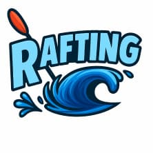
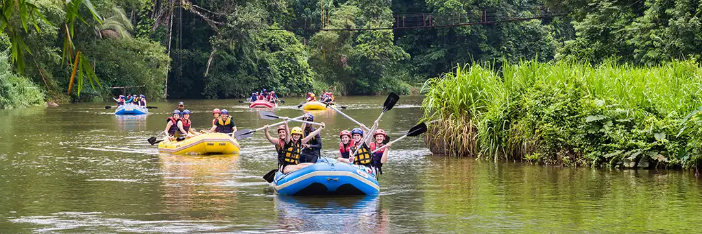

" Uma aventura segura pelo Rio da Madre até a Praia da Guarda na Grande Florianópolis"


" Uma aventura segura pelo Rio da Madre até a Praia da Guarda na Grande Florianópolis"
"A criação do Parque Estadual da Serra do Tabuleiro garantindo a preservação da natureza também oportunizou a criação de um serviço de lazer e aventura em meio a espaços de belezas e riquezas naturais apreciados de forma segura e divertida navegando do rio até o mar"